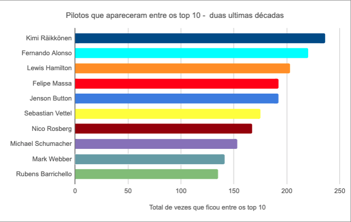
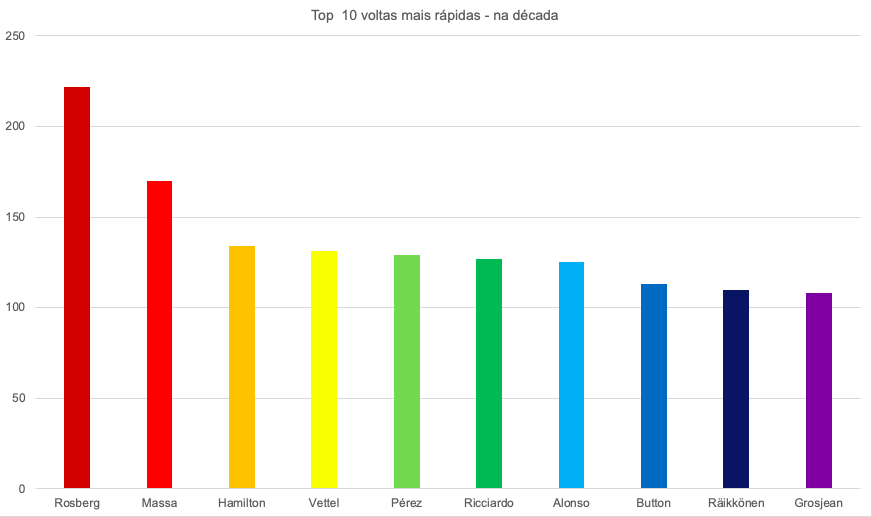
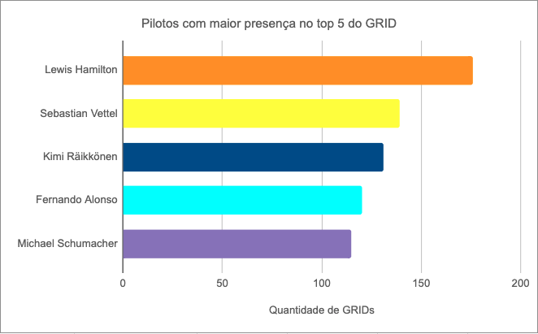
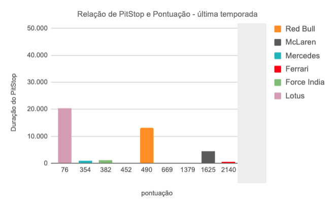
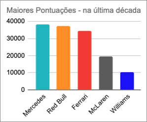
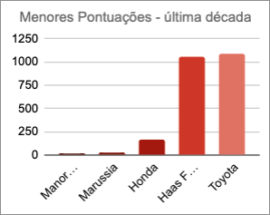
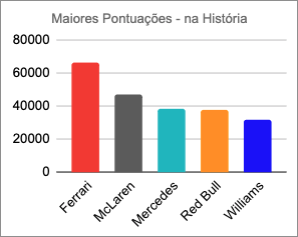
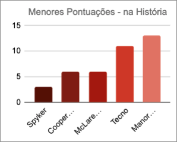
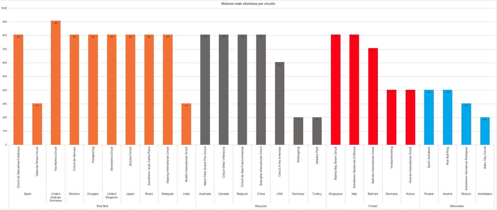
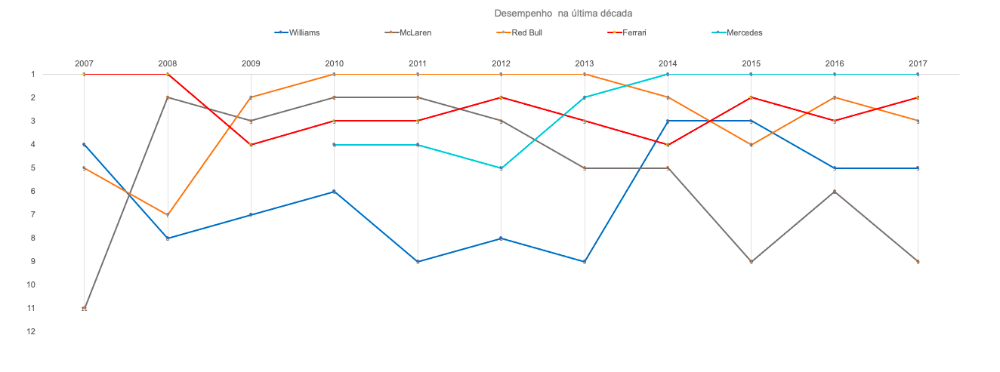

Fórmula 1
Fórmula 1 é a mais popular modalidade de automobilismo do mundo. É a categoria mais avançada do esporte a motor. Equipes e pilotos da F1 têm uma enorme capacidade de engajamento e, consequentemente, de geração de receitas adicionais pelas redes, bem como a relação com as marcas. Ter uma equipe competitiva como a Red Bull, e trazer a Mercedes para o jogo e, agora em 2022, ver o renascimento competitivo da Ferrari, são movimentos que atraem a atenção do público. Disputas com marcas e pilotos reconhecidos por suas qualidades são mais um golaço da categoria.
"Uma qualidade essencial da competição é pensar e repensar regras que possam aumentar a competitividade e a qualidade das corridas."
Venha
com a gente
fazer seu PitStop
Agora ficou fácil acompanhar a mais popular modalidade de automobilismo do mundo. Nós separamos as novidades dos circuitos e tudo sobre a sua equipe favorita para você aproveitar o melhor da temporada. Vamos te ajudar a ficar por dentro de tudo que acontece!
Somos o seu game fantasy

Para tirar
suas dúvidas
Acompanhar
tendências de pontuação
Montar seu pódio
de cada circuito
Ganhar o grande prêmio
de constructor da temporada
Gráficos
As possibilidades para se informar e divertir são muitas! Na nossa plataforma você encontra demonstrativos de dados para auxiliar na compreensão do universo de possibilidades sobre o universo automobilistico. Confira aqui um pouco dos nossos gráficos mas nao se esqueça de instalar o nosso aplicativo.
TOP 10 Pilotos com o maior número de voltas
mais rápidas da última década

A volta mais rápida de um piloto durante a temporada passou a ser um bônus de pontuação para os pilotos que terminarem a corrida entre os 10 primeiros colocados. Um ponto pode custar a liderança ou até mesmo um campeonato.
Pilotos que mais apareceram entre os TOP 10
nas duas últimas décadas

Várias pessoas possuem o seu TOP10 maiores pilotos, mas se considerarmos as duas últimas décadas, alguns nomes se destacam por estarem sempre pontuando. Pelo gráfico é possível avaliar que estar sempre pontuando nem sempre é indicativo de pódio.
TOP 5 pilotos com maior presença no GRID
considerando as 5 primeiras posições

Os pilotos que mais pontuam, também aparecem no TOP 5 do GRID, a presença contínua no grid 5 pode demonstrar estabilidade e bom desempenho tanto do piloto, num panorama geral, quanto da equipe.
A relação entre as melhores pontuações
e o tempo de PitStop

A troca do jogo de pneus pode ser decisiva para o ponto extra da volta mais rápida.
TOP 5 construtores
que mais pontuaram na última década

TOP 5 contrutores
que menos pontuaram na ultima década

TOP 5 construtores
que mais pontuaram na história

TOP 5 construtores
que menos pontuaram na história

Alguns construtores possuem um histórico de pontuação que não se reproduziu na última década. O somatório de pontuação ao longo da história do esporte apresenta a construtora Ferrari liderando o ranking, porém avaliando os últimos 10 anos, a construtora Mercedes demonstra uma ascensão no esporte.
Motores mais vitoriosos por circuito
A Red Bull se apresenta como uma equipe com conceitos mais ousados e que demonstra bons resultados quando comparada às favoritas históricas do esporte. Uma equipe com um princípio maior de desenvolvimento demonstra um desempenho mais robusto, independente do circuito.
Desempenho na última década das construtoras que mais pontuaram na F1
A relação entre pilotos e construtores é muito significativa, como pode ser observado em 2014, a ascensão da Mercedes foi diretamente relacionada à entrada de Lewis Hamilton, piloto que demonstra consistência no TOP 5 no GRID, bem como a Red Bull que liderava os campeonatos enquanto Sebastian Vettel fazia parte da equipe.. Acompanhar essa variação é importante para compreender a importância do desempenho de cada piloto, volta mais rápida, contagem de pontos, desde o Grid até o pódio por circuito.